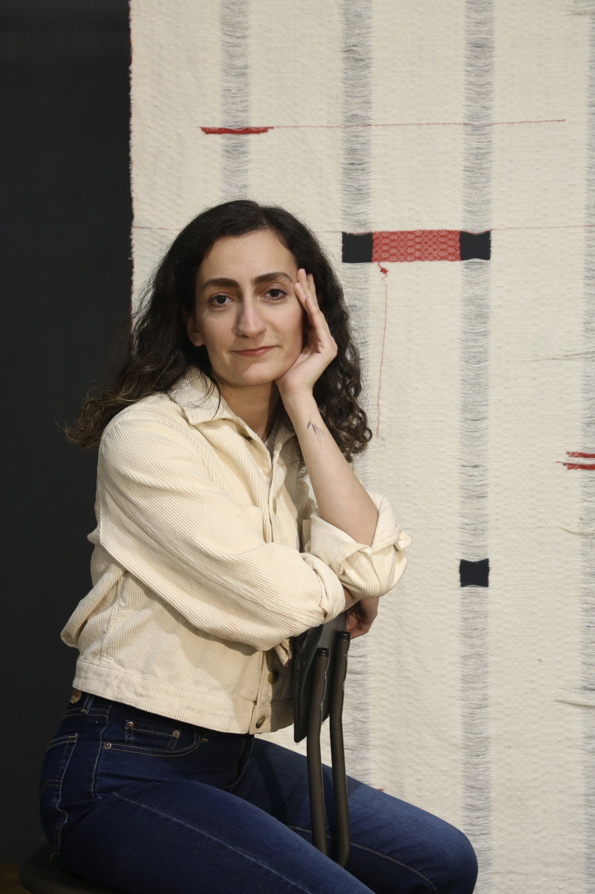

I am an interdisciplinary artist working primarily with textile-based processes. I hold a BFA in Textile Design and am currently pursuing an MFA in Fibers at the University of Massachusetts Dartmouth. My work has been presented in juried exhibitions, including the 39th Annual Materials: Hard + Soft at the Greater Denton Arts Council in Texas, PhotoSpiva 2026 at Spiva Center for the Arts in Missouri, and In Black & White, a virtual exhibition by Site Brooklyn Gallery.
My practice is shaped by lived experience, self-observation, and the emotional weight of in-between spaces. I explore inner struggles shaped by the environment, a theme reflected throughout my artistic expression. I examine dualities including presence and absence, concealment and revelation, and fragility and endurance. Across materials, I carry memory, silence, and resistance while holding softness as strength.
Before moving to the United States, I worked as a textile designer, photographer, and printmaker and founded my own art shop, where I created handmade woven pieces. I have also collaborated with arts organizations and led community workshops.
